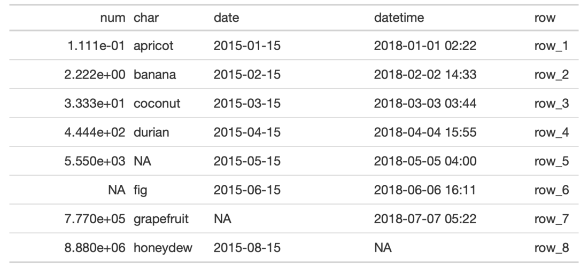

| cols_width {gt} | R Documentation |
Manual specifications of column widths can be performed using the
cols_width() function. We choose which columns get specific widths. This
can be in units of pixels (easily set by use of the px() helper function),
or, as percentages (where the pct() helper function is useful). Width
assignments are supplied in ... through two-sided formulas, where the
left-hand side defines the target columns and the right-hand side is a single
dimension.
cols_width(data, ..., .list = list2(...))
data |
A table object that is created using the |
... |
Expressions for the assignment of column widths for the table
columns in |
.list |
Allows for the use of a list as an input alternative to |
Column widths can be set as absolute or relative values (with px and
percentage values). Those columns not specified are treated as having
variable width. The sizing behavior for column widths depends on the
combination of value types, and, whether a table width has been set (which
could, itself, be expressed as an absolute or relative value). Widths for the
table and its container can be individually modified with the table.width
and container.width arguments within tab_options()).
An object of class gt_tbl.

4-2
Other Modify Columns:
cols_align(),
cols_hide(),
cols_label(),
cols_merge_n_pct(),
cols_merge_range(),
cols_merge_uncert(),
cols_merge(),
cols_move_to_end(),
cols_move_to_start(),
cols_move(),
cols_unhide()
# Use `exibble` to create a gt table;
# with named arguments in `...`, we
# can specify the exact widths for
# table columns (using `everything()`
# or `TRUE` at the end will capture
# all remaining columns)
tab_1 <-
exibble %>%
dplyr::select(
num, char, date,
datetime, row
) %>%
gt() %>%
cols_width(
num ~ px(150),
ends_with("r") ~ px(100),
starts_with("date") ~ px(200),
everything() ~ px(60)
)